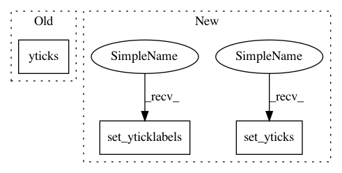

8c00b4b5ee453e31a8bc70f36d50607cccb0902f,scanpy/plotting/tools.py,,aga_path,#Any#Any#Any#Any#Any#Any#Any#Any#Any#Any#Any#Any#Any#Any#Any#Any#,830
Before Change
if as_heatmap:
pl.imshow(np.array(X), aspect="auto", interpolation="nearest",
cmap=color_map)
pl.yticks(range(len(X)), keys, fontsize=ytick_fontsize)
ax = pl.gca()
ax.set_frame_on(False)
pl.colorbar()
left_margin = 0.2 if left_margin is None else left_margin
After Change
if as_heatmap:
img = ax.imshow(np.array(X), aspect="auto", interpolation="nearest",
cmap=color_map)
ax.set_yticks(range(len(X)))
ax.set_yticklabels(keys, fontsize=ytick_fontsize)
ax.set_frame_on(False)
pl.colorbar(img, ax=ax)
left_margin = 0.2 if left_margin is None else left_margin
pl.subplots_adjust(left=left_margin)
In pattern: SUPERPATTERN
Frequency: 3
Non-data size: 3
Instances
Project Name: theislab/scanpy
Commit Name: 8c00b4b5ee453e31a8bc70f36d50607cccb0902f
Time: 2017-07-31
Author: f.alex.wolf@gmx.de
File Name: scanpy/plotting/tools.py
Class Name:
Method Name: aga_path
Project Name: Pinafore/qb
Commit Name: a37910cf0c8fbd1f863c058912571902198cad44
Time: 2017-05-23
Author: ski.rodriguez@gmail.com
File Name: qanta/reporting/plotting.py
Class Name:
Method Name: plot_confusion
Project Name: neurodsp-tools/neurodsp
Commit Name: e6171299090d5907fb703d5702e3b194de1c63fd
Time: 2021-03-14
Author: tdonoghue.research@gmail.com
File Name: neurodsp/plts/time_series.py
Class Name:
Method Name: plot_instantaneous_measure